Osteopatia · Fisioterapia · Fitoterapia
Entre o toque, as manipulações e a conversa das moléculas.
Bem-vindos ao site de Osteopatia da Bia Maia. Aqui você poderá conhecer um pouco sobre a Osteopatia, essa nova medicina integrativa “recém-chegada” aos trópicos.
O que é a Osteopatia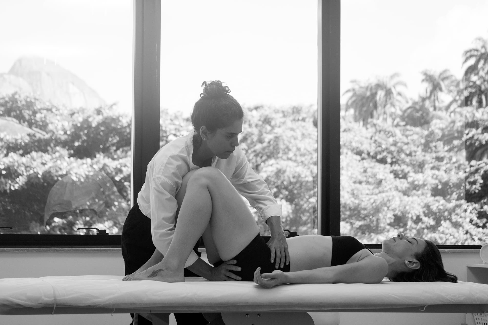
Introdução
Informar sobre as aplicabilidades da Osteopatia, da Fisioterapia e da Fitoterapia, a base do meu trabalho.
-
01
Osteopatia
O toque e as manipulações.
-
02
Fisioterapia
O movimento dos músculos e das articulações.
-
03
Fitoterapia
As moléculas das plantas que irão ajudar a relaxar, desinflamar e regenerar o corpo para uma melhor saúde.
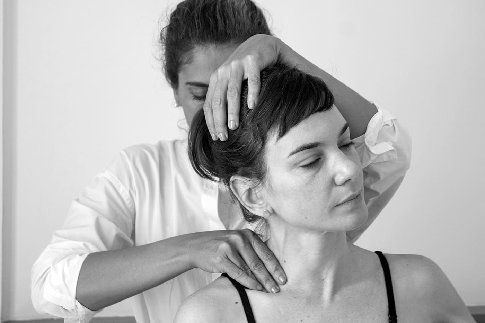
Vamos compartilhar por aqui estudos sobre saúde, prevenção e longevidade.
Nosso objetivo é trazer conteúdo para o grande público interessado em saúde, prevenção, tratamentos e estudos na área da saúde integrativa.
Tenham uma boa leitura!
“Neste instante, esteja você onde estiver, há uma casa com o seu nome. Você é o único proprietário, mas faz tempo que perdeu as chaves. Por isso, fica de fora, só vendo a fachada. Não chega a morar nela. Essa casa, teto que abriga suas mais escondidas e reprimidas lembranças, é o seu corpo.”
Thérèse Bertherat
Osteopatia
O que é a Osteopatia?
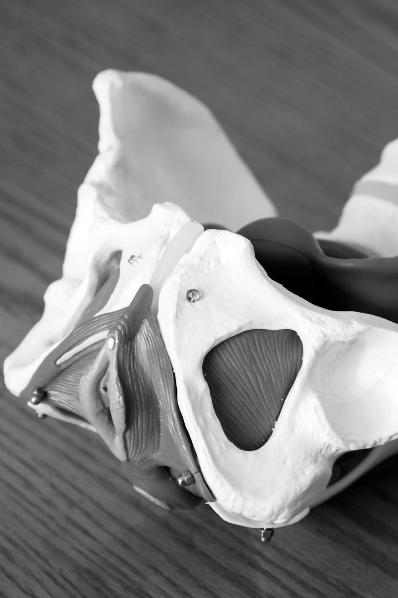
A Osteopatia é um conceito filosófico e terapêutico, que tem como objetivo diagnosticar e tratar manualmente perdas de mobilidade e/ou bloqueios em estruturas do corpo.
Considera, portanto, o indivíduo em sua globalidade. É uma medicina integrativa e preventiva, onde o corpo é um mosaico de partes integradas que interagem entre si.
Com base em conhecimentos aprofundados de anatomia e fisiologia, o osteopata leva em conta todas as funções corporais que se comunicam entre si (sistema articular, visceral, neural, vascular, metabólico etc.) e também os hábitos de vida do paciente, com que frequência ele se movimenta, come e pensa.
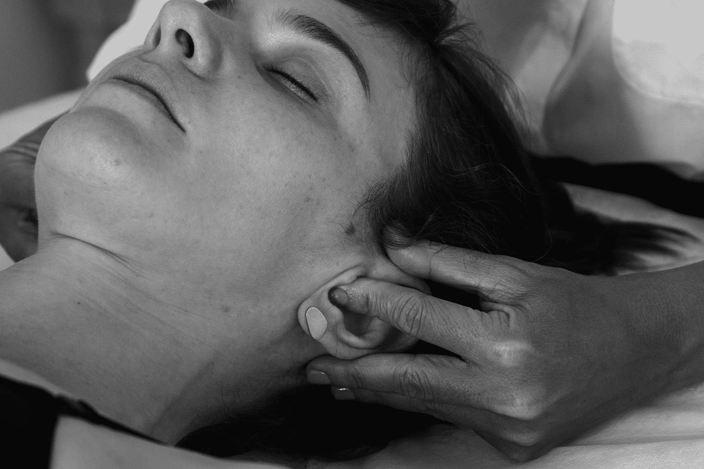
Devido aos maus hábitos da modernidade e ao próprio processo de envelhecimento, o corpo perde mobilidade ao longo da vida. O estresse, a falta de exercício e a alimentação tóxica dos dias de hoje são alguns dos fatores que podem gerar tensões ou bloqueios no corpo.
Bloqueios estes também chamados em “Osteopatês” de “disfunções osteopáticas”, ou melhor, local de trabalho dos osteopatas. Estas disfunções podem acometer diferentes estruturas e camadas do corpo como: articulações, músculos, vísceras, fáscias, sistema neural, vascular, endócrino etc.
Com o acúmulo dessas zonas de bloqueio, o corpo vai gerando compensações e adaptações, até o momento em que estas não funcionam mais e vem uma crise, um sintoma. O mais comum deles é a Dor.
A clínica em osteopatia pode, portanto, trabalhar desde a prevenção, o tratamento, e até a cura de doenças e sintomas, além de atuar como cuidado paliativo em casos graves e ainda melhorar a qualidade de vida do paciente, contribuindo para a sua longevidade.
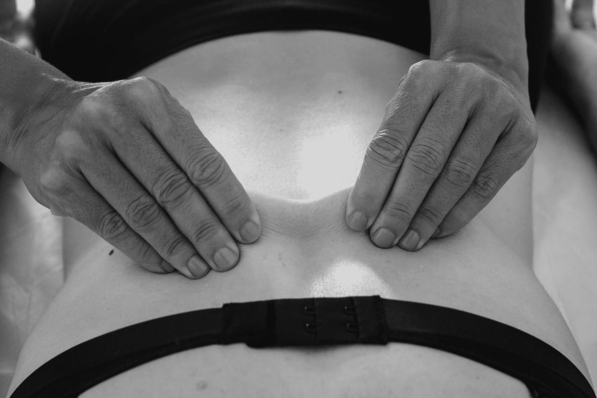
Como característica de sua prática, o osteopata utiliza as mãos como ferramenta de trabalho. Através de técnicas manuais, o osteopata libera as tensões e favorece o potencial de autorregulação ou autocura do organismo a reencontrar o seu equilíbrio e a saúde.
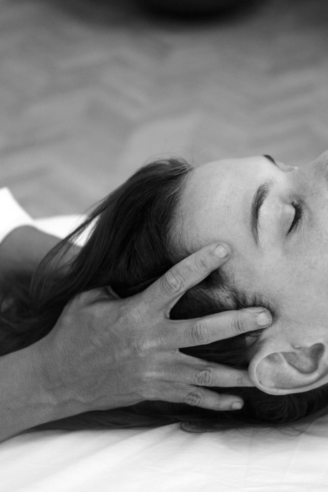
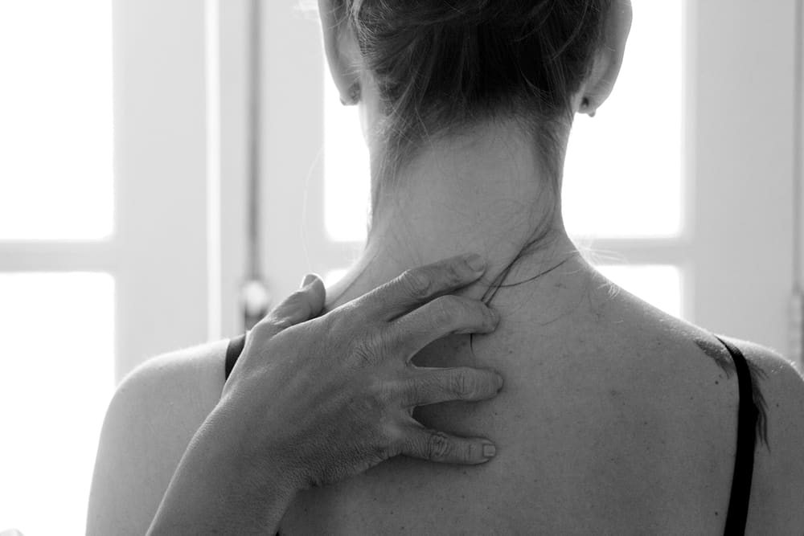
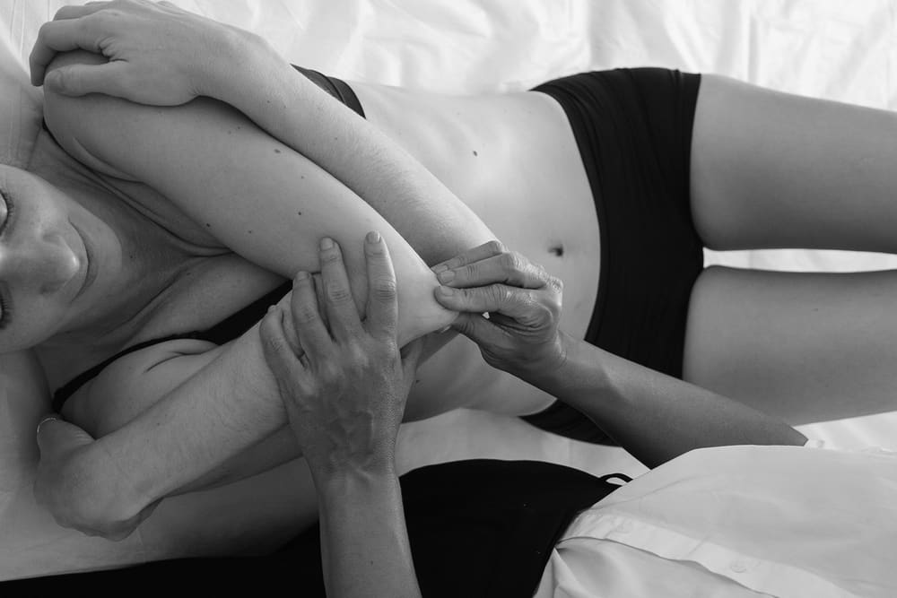
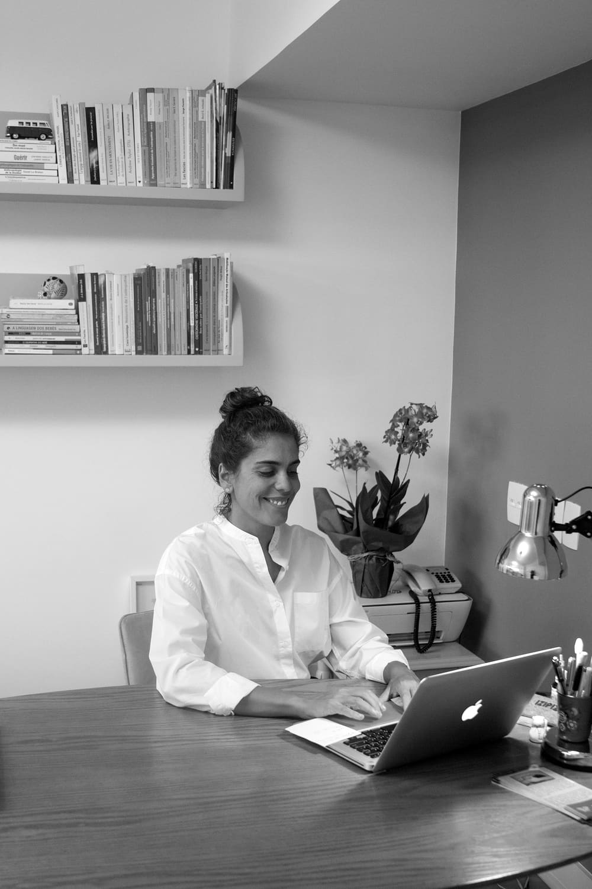
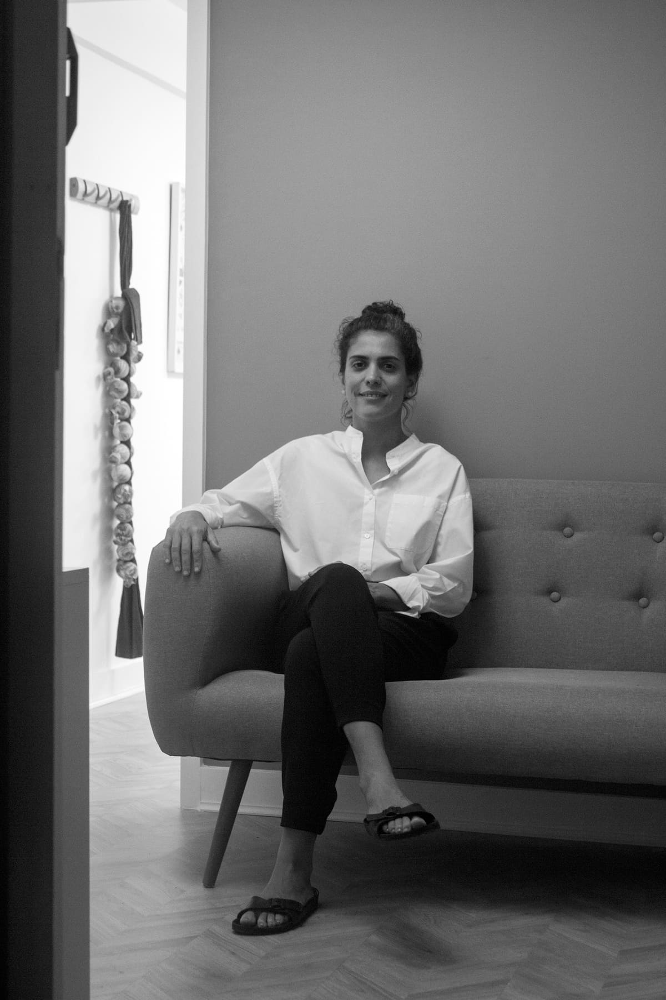
Sobre
Beatriz Maia
Osteopata D.O. · Fisioterapeuta · Especialista em Fitoterapia
Beatriz Maia iniciou sua formação em Fisioterapia na Universidade Federal do Rio de Janeiro (UFRJ). Primeiramente trabalhou com métodos de correção postural e cadeias musculares, como Mézières e GDS (Godelieve Denys-Struyf), em consultório no Rio de Janeiro, onde iniciou a sua formação em Osteopatia, em seguida concluída na França, na Escola de Osteopatia de Paris (EOP, École d’Ostéopathie de Paris), onde completou seus estudos e defendeu seu D.O. (Diploma de Osteopatia).
Em território francês iniciou a pesquisa sobre o trabalho de Osteopatia ligado à saúde das mulheres, grávidas e bebês, e realizou várias formações de pós-graduação com osteopatas especialistas no assunto, como Elisa Boillot, Eric Simon, Dany Hertz e Claudine Argeron-Marque.
Em seguida se aprofundou nos estudos de Filosofia da Osteopatia na Universidade Católica de Lyon, onde defendeu seu D.U. (Diplôme Universitaire de la Philosophie de l’Ostéopathie, UCLy). Trabalhou em sua tese as antropologias dos corpos e suas culturas, a partir de sua experiência de consultório entre o Brasil e a França.
Em 2019, de volta ao Brasil, iniciou estudos em Fitoterapia, tratamento com plantas medicinais, e se tornou especialista em Fitoterapia pela Faculdade de Farmácia da UFRJ em 2021.
Hoje está estabelecida em consultório no Jardim Botânico, no Rio de Janeiro, onde trata seus pacientes como osteopata e prescritora de plantas medicinais. Promove ateliês e encontros de prática de saúde e longevidade, entre o Rio e Paris.
- UFRJFisioterapia
- EOP · ParisD.O. — Diploma de Osteopatia
- UCLy · LyonD.U. Filosofia da Osteopatia
- UFRJ · 2021Especialista em Fitoterapia
Depoimentos
O que dizem os pacientes
Sempre tive o entendimento de que corpo, mente e emoções estão interligados. Somos um só. Qualquer tipo de abordagem física, para mim, precisa levar isso em consideração. Bia foi a primeira osteopata com quem finalmente tenho a sensação de estar sendo ouvida em todos os níveis.
Além de me passar muita segurança técnica e mecânica em relação ao funcionamento do corpo, ela percebe o que está por trás, faz as conexões necessárias para fazer uma leitura ampla, como um ser merece ser lido e escutado. Isso dá a ela um nível de acolhimento muito acima da média, acima do que já experimentei até hoje. O nível de entrega avança a cada encontro e o resultado é sucesso total. Ela sempre me conserta! Obrigada, Bia Maia. Vida longa pra gente!
Procurei a Bia para recuperação pós-cirúrgica de uma operação do ligamento cruzado no meu joelho há 10 anos. De fato foi um belo encontro: profissional, simpática e delicada, com uma linguagem simples e direta, me proporcionou uma recuperação plena e rápida através de exercícios e manipulações corporais.
Graças à Bia pude retornar à minha atividade profissional, que é piloto de asa-delta, com total segurança. E continuo fazendo visitas anuais para organizar meu corpo. Obrigado, querida Bia!
Cheguei no consultório da Bia com uma dorzinha localizada na altura do ovário direito e saí de lá com um mapa do meu corpo.
A osteopatia revela a malha de interconexões subjacentes ao sintoma que aparece. É impossível seguirmos ignorando o que o corpo mostra e que as mãos e o olhar sensível do trabalho da Bia conseguem perceber. É realmente um tratamento que nos coloca em contato profundo com o nosso corpo e com as marcas das experiências que carregamos.
Além de ter aliviado o meu sintoma, ao longo das sessões minha saúde foi melhorando como um todo, conforme novas camadas de compreensão iam se desdobrando e, principalmente, conforme eu ia me aproximando e me responsabilizando pelo meu corpo. A osteopatia promoveu não apenas a reorganização das estruturas do meu corpo, mas uma mudança na minha capacidade de estar presente para o que sinto e o que se passa dentro de mim.
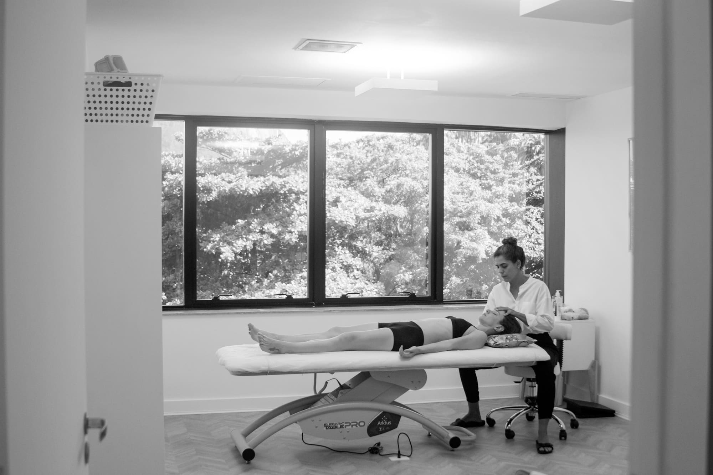
Seja bem-vindo!
Contato
Agende sua consulta
- WhatsApp (21) 96739-8252
- E-mail contato@biamaia.com.br
-
Endereço
Rua General Garzon, 22
Rio de Janeiro, RJ · 22470-010